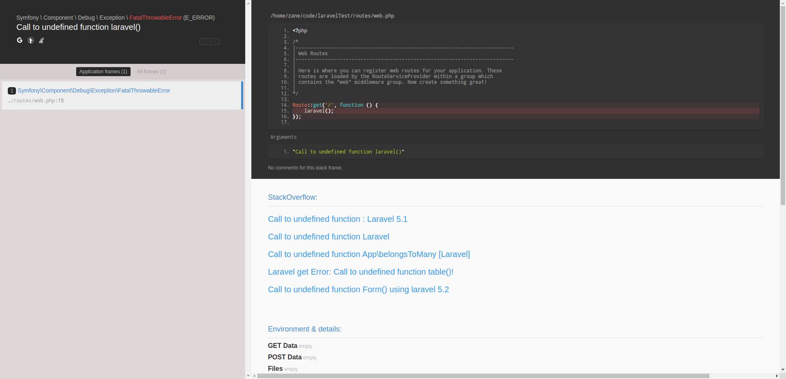

0x00 前言
我从 Laravel 接触到了 Whoops，这款非常好的错误展示包，虽然它提供了一个根据错误信息跳转到 StackOverflow 搜索页的链接，但对于我这种懒人来说当然是希望在报错页面显示根据错误信息搜索出来的结果啊。嗯，然后我就造了这个玩意 whoops-stackoverflow。
0x01 介绍
直接上图

(⊙o⊙)…功能仅仅是在原 Whoops 的基础之上利用 Stack Exchange 提供的 API 给原报错页增加了在 StackOverflow 中与报错信息相关的前 5 条问答链接。感觉没卵用但聊胜于无/(ㄒoㄒ)/~，另外注意的是使用这款包要确保开发环境能连接上 Stack Exchange 否则就拿不到问答链接。
安装和使用请点击：Whoops-StackOverflow
0x02 心路（被坑）历程
这个看上去很简单的功能在实现期间却波澜起伏，一开始幻想只是简单的继承原来的 PrettyPageHandler 类，然后改下模板用 iframe 标签将 Stack Overflow 的搜索页套进去就可以了。然而再次被现实击垮…… PrettyPageHandler 类的属性都被设成 priavte 了，想要修改部分功能都几乎要将整个类复制过来……/(ㄒoㄒ)/太不优雅了，然后想到闭包的 call 方法能够改变类作用域，使其可以访问到对象的私有属性。然后就想代理 PrettyPageHandler 类，然后通过闭包实现功能。结果发现在最关键的 handle 方法中调用的是 $templateHelper 的 setVariables 方法，会将我之前的闭包设置的模板变量全都替换…… 幸好 PrettyPageHandler 提供了个 addResourcePath 方法可以添加模板文件，所以我只能粗鲁的将实现代码写在模板文件里了/(ㄒoㄒ)/~~，因为作死把代码写模板文件里又导致后面写测试很麻烦。展示方面，本来打算弄个 iframe 嵌进去就了事了，结果 Stack Overflow 设置了 X-Frame-Options 不允许以 iframe 形式嵌入！然后我又在想干脆上爬虫爬算了，然后我就遇到了 Stack Overflow 的反爬虫机制(ㄒoㄒ)……幸亏发现了 Stack Exchange 提供了 API 不然就直接凉凉。最恐怖的是，当我全部都写完发现原本 Whoops 就有一个小按钮可以跳到Stack Overflow，要是我早知道或许就没有兴趣写了这个玩意了，哭……